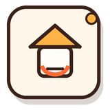

饭搭小程序完整高保真 UI 设计稿
这是一份面向真实开发落地的设计交付稿：以当前 16 个 Taro 页面 为边界，重新统一导航、页面结构、视觉 Token、组件规范、状态规范和关键页面高保真样式。

 开始点单
开始点单 心愿菜
心愿菜
设计原则
新设计不再把饭搭做成普通工具列表，而是围绕“今天吃什么、和谁一起吃、这顿饭留下什么记录”建立生活化体验。视觉关键词为 暖餐桌、轻社交、可记录、可协作。
餐桌感
奶油底色、暖橙主色、柔和卡片和食物图形，让页面像“餐桌计划本”。
关系优先
情侣与饭搭子不是筛选项，而是数据上下文。每个页面都应显示当前关系。
少而清晰
手机竖屏以单列为主，优先展示点单、补记、加入菜单、确认订单。
状态完整
覆盖空、加载、错误、无关系、无权限、长内容和图片缺失状态。
真实页面与导航结构
主 Tab 建议保持 4 个：首页、点单、日历、我的。菜单管理、学菜、菜篮子、心愿、预算作为首页和场景内入口，不再占用主 Tab。
首页
餐桌上下文、今日推荐、签到、快捷入口、最近动态。
pages/index/index点单
餐桌切换、外卖式选菜、购物车、自己记一餐或邀请成员一起吃。
pages/orders/create日历
月视图、餐次记录、预算联动、当日照片与留言。
pages/calendar/index我的
账号、我的餐桌、积分、跨平台绑定、设置。
pages/profile/index| 页面组 | 路由 | 设计定位 | 必须覆盖状态 |
|---|---|---|---|
| 登录 | login | 微信/抖音登录、手机号绑定、新用户昵称 | 新用户、绑定手机号、登录失败、取消授权 |
| 菜单管理 | dishes/index、detail、create | 按餐桌管理菜单和菜品详情编辑 | 空菜单、无图片、长菜名、权限不足、保存中 |
| 点单 | orders/index、create | 点单列表、共同就餐、个人记录 | 待确认、投票中、已确认、已拒绝、空订单 |
| 日历 | calendar/index、record | 餐次记录、预算、照片、评论 | 无记录、无预算、超预算、图片加载失败 |
| 协作 | plaza、basket、wishes、budget、couple、buddy | 二级任务页，统一复用组件 | 无餐桌、无成员、空列表、删除确认 |
视觉 Token
后续实现建议先改 `app.scss`，再逐页替换硬编码颜色和重复卡片样式。
字号
页面标题 22/28，卡片标题 16/22，正文 14/21，辅助信息 12/18，标签 11/16。
间距
页面边距 16，卡片内边距 14/16，模块间距 20/24，紧凑列表间距 8。
圆角
输入框 999，普通卡片 16，大卡片 22，图片 14，浮层/弹窗 24。
高保真页面预览
下方原型覆盖主链路页面。按钮可切换不同页面稿；每个页面都可作为前端逐页复刻的视觉基准。

连接情侣、室友和饭搭子。同步菜单、一起点菜、记录预算，也记住那些好吃的瞬间。
 开始点单菜单管理想吃
开始点单菜单管理想吃① 牛腩焯水后煸香。② 加番茄炒出汁。③ 小火炖 35 分钟，最后加土豆收汁。

 本月 ¥680 / ¥1,200 · 预算内
本月 ¥680 / ¥1,200 · 预算内积分
连续签到
本月餐次
情侣餐桌› 饭搭餐桌›预算管理›积分明细›
饭搭餐桌›预算管理›积分明细›组件规范
建议将重复 SCSS 收敛为全局组件类或 Taro 组件，避免每个页面各写一套 Tab、卡片和空状态。
按钮
主操作只能有一个，固定使用渐变橙；次操作为白底描边；危险操作使用红色语义色。
卡片
菜品、订单、记录、菜单项复用同一张基础卡片，只替换右侧动作区。
状态标签
状态必须同时用颜色和文字表达，不只依赖颜色。
饭搭专属 Icon Set
已新增 `fanda-app/src/assets/stickers/` 彩色贴纸 PNG，并替换 `src/assets/tabbar/` 的 4 组 PNG。风格为深咖啡粗描边、奶油底、橙黄绿点缀和轻投影，避免和暖色背景融合。
使用规则
TabBar 继续使用 81×81 透明 PNG；页面内功能入口优先使用 160×160 贴纸 PNG。不要再混用 emoji、老旧拟物 PNG 和单薄线性图标。
| 组件 | 使用位置 | 规格 | 状态 |
|---|---|---|---|
| 关系切换器 | 首页、菜单、日历、预算、菜篮子 | 胶囊 Tab，当前关系高亮，饭搭子支持横向滚动 | 无情侣、无饭搭子、切换中 |
| 菜品卡片 | 菜单、学菜、点单、心愿 | 左图 64×64，标题一行，meta 一行，最多 3 个标签 | 无图、已加入、不可操作 |
| 订单卡片 | 订单列表、首页动态 | 状态横幅 + 菜品行 + 总价 + 操作按钮 | 待确认、投票中、确认、拒绝、取消 |
| 日历日期格 | 美食日历 | 7 列等宽，记录点最多 3 个，选中态实心主色 | 今天、选中、外月、有记录、纪念日 |
| 空状态 | 所有列表页 | 图标 + 一句话原因 + 明确下一步按钮 | 空数据、无权限、未建关系、加载失败 |
状态与文案规范
每个关键状态都给用户下一步，不让页面停在空白或技术错误上。
空菜单
还没有可点的菜。按钮：去学菜广场看看 / 手动添加。
无关系
先绑定情侣或创建饭搭子，菜单才会同步。按钮：生成邀请码 / 输入邀请码。
预算超出
本月已超预算 ¥120。按钮：查看超出餐次 / 调整预算。
网络失败
数据没端上来，请检查网络后重试。按钮：重新加载。
前端落地说明
建议按以下顺序落地，确保代码逐步接近高保真设计，而不是一次性大改导致风险失控。
第一批：基础系统
- 统一 `app.scss` Token：颜色、字号、间距、圆角、阴影。
- 替换硬编码主色和 `transition: all`。
- 抽公共卡片、按钮、状态标签、空状态样式。
第二批：主页面复刻
- 先改首页、菜单、日历、我的四个 Tab 页面。
- 再改菜品详情、创建点单、订单列表、预算。
- 最后统一菜篮子、心愿、情侣、饭搭子、学菜广场。